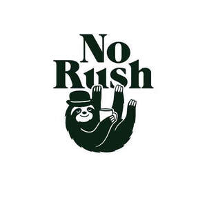

Trade Mark Journal No.2026/010 6 March 2026
UK00004320699 7 January 2026 (29,30,43)

- Class 29
- Prepared / Ready foods; Prepared meals; Ready-made meals; Ready-to-eat meals; Pre-cooked meals; Heat-and-serve meals; Chilled prepared meals; Frozen prepared meals; Soups & broths; Soups; Pre-cooked soups; Noodle soups; Broths Stock (food); Savory dishes; Savoury food products; Savoury meals; Savoury snacks; Snack foods based on meat; Snack foods based on vegetables; Snack foods based on legumes; Meat / plant-based Meat-based meals; Meat products; Poultry products; Fish products; Vegetarian prepared meals ; Vegan prepared meals; Plant-based prepared meals; Street / café food; Hot dog sausages; Sausages ; Prepared sandwiches containing meat; Ready-made wraps containing meat or vegetables; Other Cooked vegetables; Preserved vegetables; Legume-based foods; Protein-based prepared foods.
- Class 30
- Coffee; Coffee beans; Ground coffee; Instant coffee; Coffee-based beverages; Espresso-based beverages; Iced coffee; cold brewed coffee; tea; Herbal teas; Iced tea; Cocoa; Hot chocolate; Bakery products; Bread Rolls; Pastries; Croissants; Muffins; Cakes; Cupcakes; Brownies; Biscuits; Cookies; Waffles; Pancakes; Desserts; Confectionery; Chocolate; Chocolate-based products; Breakfast cereals; Oatmeal; Porridge; Granola; Muesli; Rice; Pasta; Noodles; Sandwiches; Wraps; Toasts; Bagels; Flatbreads; Pizza bases.
- Class 43
- Services for providing food and drink; Café services; Coffee shop services; Restaurant services; Brunch restaurant services; Snack-bar services; Provision of food and drink Eat-in / dine-in / on-site; Providing food and drink for consumption on the premises; Restaurant and café services for the provision of food and beverages; Takeaway / to-go Take-away food and drink services; Take-away restaurant services; Provision of take-away food and drinks; Delivery / off-site Food delivery services; Restaurant services featuring home delivery; Catering / events; Catering services; Outside catering services; Mobile catering services; Catering of food and drink; Catering services for events; Providing food and drink for catered events; Special formats (optional); Reservation of tables for restaurants; Booking of catering services; Providing information relating to restaurants and cafés.
Diana Lytvyn a partner in RASH AND PARTNERS LTD
Rashad Muradov